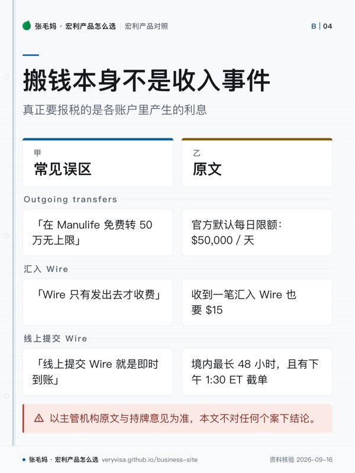

- 解决什么问题工资账户在别家银行时，钱怎么来回走、走多久、收不收费
- 限额官方 FAQ 默认 Outgoing transfers $50,000／天；e-Transfer 单笔与 24 小时各 $3,000
- 费用与时间与其他加拿大银行的转入转出 $0，但至少排到下一个工作日；Wire 发送 $30／$50／$65 三档，汇入收 $15
- 税务后果本人名下账户之间搬钱不是收入事件；公司账户转到股东个人账户另有规则
知识卡
不看正文也能拿到这一页的核心规则：先看导读，再看图。点图放大，左右翻页。
- 先看先看非即时和默认每日限额：这两项最容易影响大额调钱安排。
- 易漏支票或 EFT 从其他加拿大银行存入后仍可能被冻结；开户不满 90 天等情形可能更长。
- 下一步去按产品核对转账方式，带金额与时间要求找持牌专业人士。

- 先看先看三行误区各自对应的限制：限额、收费和到账时间不是一回事。
- 易漏公司账户转到股东个人账户不能当普通银行转账看；跨境申报还要按个人居民身份另查。
- 下一步去按税务问题核对资金性质，带账户来源与去向找持牌专业人士。
开在别家银行的工资账户，和开在宏利的计息账户之间，钱怎么来回走、走多久、收不收费—— 这是决定这个账户好不好用的关键，也是最容易被介绍资料一笔带过的部分。
把钱挪进来之后怎么花，去看钱怎么进来、怎么花出去； 本人账户之间搬钱要不要报税，去看利息收入与 T5。
一句话
在 Manulife Bank 里，本人名下其他加拿大银行的账户可以关联进来双向免费调钱（非即时），大额境内付款可以在 App／网银里自助提交 Wire——这两件事是它和五大行个人账户最容易比出差别的地方。
事实清单
- 关联外部账户有两条路：App／网银里用 Flinks 登录另一家加拿大银行验证，或填 Funds Transfer Agreement 附作废支票／PAD 表单。✅源
- 关联成功后（官方写「within 48 hours」），这个外部账户可以在转账的 From 或 To 菜单里选到，并可设一次性或定期（recurring）转账。✅源
- 转入或转出外部行账户的转账不能即时执行：官方要求这笔转账至少排到一个工作日之后。✅源
- Advantage Account 与其他加拿大银行之间的转入、转出，Manulife 均收 $0，与账户余额无关（费用指南 2026-03-12 生效版）。✅源
- 官方 FAQ 的默认每日限额里，Outgoing transfers 是 $50,000／天；要超出这个限额须联系客服。✅源
- 从其他加拿大银行存入的支票或 EFT，≤$1,500 冻结 2–5 个工作日，>$1,500 冻结 2–8 个工作日；开户不满 90 天等情形可能更长。✅源
- Interac e-Transfer 发送限额：单笔与 24 小时各 $3,000、7 天 $10,000、30 天 $20,000；接收单笔上限 $25,000。✅源
- e-Transfer 发送：余额 ≥$1,000 时 $0，否则每笔 $1；接收始终 $0。✅源
- 自 2026-06-01 起，App／网银数字提交的境内 Wire 单笔上限提高到 $100,000；超过此额或汇往美国／国际需致电办理。✅源
- Wire 发送费：≤$10,000 收 $30，$10,000.01–$50,000 收 $50，>$50,000 收 $65。✅源
- 收到一笔汇入 Wire，Manulife 收 $15 入账费。✅源
- Wire 处理时长：加拿大境内最长 48 小时、美国最长 5 个工作日、其他国际最长 10 个工作日；东部时间下午 1:30 后或非工作日提交顺延到下一工作日。✅源
与同类产品比较
口径：各行官方页面在核查日（见 last_verified）的状态；「个人境内 Wire」只指个人零售账户，不含企业网银。
| 机构 | 个人境内 Wire 能否线上自助提交 | Wire 发送费 | Wire 入账费 | 网银内关联外部加拿大银行账户 |
|---|---|---|---|---|
| Manulife Bank | 能，单笔最高 $100,000 ✅源 | $30 / $50 / $65 三档 ✅源 | $15 ✅源 | 双向、可一次性或定期 ✅源、转入转出均 $0 ✅源 |
| CIBC | 官方页写备齐信息后到 Banking Centre 办理 ✅源 | $30 / $50 / $80 三档 ✅源 | $15 ✅源 | 仅外部→CIBC 单向拉入，单笔最高 $100,000，1–3 个工作日 ✅源 |
| RBC | 官方页写 Wire 只能在分行办理 ✅源 | 加元账户发送起价 $45 ✅源 | 他行汇入且金额高于 $50 的，起价 $17；RBC 境内单位汇入免费 ✅源 | 未找到同类功能；「Link」页面指向 RBC Bank (U.S.) 跨境账户 ✅源 |
| TD | 官方费用表把这项列为「In-Branch Wire Transfer/Payment」，即分行办理 ✅源 | 汇往加拿大境内或国际的非 TD 账户 $50 ✅源 | $17.50 ✅源 | 官方互联功能是 TD Bank (US)↔TD Canada，限同集团账户 ✅源 |
| BMO | 官方页写到 BMO 分行办理 ✅源 | 官方页不列金额，只指向《Bank Plans and Fees for Everyday Banking》费用指南 ✅源 | 同左，官方页不列金额 ✅源 | 「External Transfers」是 BMO 美国实体功能，不适用加拿大账户 ✅源 |
| Scotiabank | 官方帮助中心写「请带齐资料到分行办理」 ✅源 | 官方个人账户费用表未列出汇款发送费 ✅源 | $15.00 CAD／USD 每笔（养老金汇入 $1.50） ✅源 | 支票账户除 e-Transfer 外无跨行 EFT（客服回复转述，待官方页复核）🟡报 |
五大行的线上国际汇款产品（RBC IMT、CIBC Global Money Transfer 等）只汇往境外，不能替代境内 Wire。✅源
税务后果
- 在本人名下不同银行账户之间搬钱，本身不是收入事件；真正要报税的是各账户里产生的利息。✅源
- 公司账户的钱转到股东个人账户，不是「银行转账」这么简单：CRA 把「公司付给股东、又不属于真诚商业交易的款项」列为股东福利，另有薪酬、股息等不同处理——问公司会计师。✅源
- 转账手续费免不免与税务无关；跨境汇款涉及的申报义务按个人居民身份另查，问 CPA。
- 以主管机构原文与持牌意见为准，本文不对任何个案下结论。
常见误区
- 「五大行都不能银行间转账」——错。它们都能收 EFT、发 e-Transfer 和 Wire，差别在于没有做成网银内自助双向关联的产品。✅源
- 「在 Manulife 免费转 50 万无上限」——错。官方默认 Outgoing transfers 是 $50,000／天，且到账后还可能有冻结期。✅源
- 「CIBC 也能双向关联」——官方只确认外部→CIBC 单向拉入。✅源
- 把 RBC／TD／BMO 美国子公司的外部转账页面当成加拿大账户功能——那几页都是美国实体产品。✅源
- 「Wire 只有发出去才收费」——错，收到一笔汇入 Wire 也要 $15。✅源
- 「线上提交 Wire 就是即时到账」——错，境内最长 48 小时，且有下午 1:30 ET 截单。✅源
- 「五大行个人 Wire 都要去分行」是 2026-09-15 逐家查官方页的结论，五家都有官方原文（TD 见官方费用表的「In-Branch」口径）；银行改版后结论可能变，发布当天要复核。✅源
事实来源
该问经纪的问题（抄下来直接问）
- 我常用的那家主银行账户，关联到 Manulife 后，大额调钱每次要提前几天安排、到账后冻结多久？
- 我接下来有房屋交割或大额境内付款，走 Wire、关联转账还是银行本票更合适，时间线怎么排？
- 如果我的钱要在公司账户和个人账户之间来回走，哪些转账需要先问会计师？
- 这一页的数字核对日期是哪天？到我签字那天，哪几个会变？
- 同样的需求，除了这个产品还有哪些选择，为什么你不建议那几个？
去论坛讨论
音视频与笔记本
- nb-manulife-bank
本页是公开资料的整理与对照，不是官方文件，也不构成针对你个人情况的保险、投资或税务建议。产品条款、利率与费用以机构当期官方文件为准；税务处理以主管机构原文与持牌专业意见为准。数字会变，看到本页请对一眼「核对日期」。